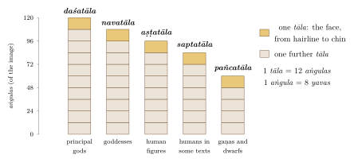
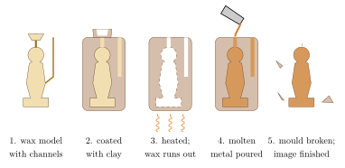

Chapter 11: Śilpaśāstra: The Making of Images¶
11.1 Śilpa and the Śilpin¶
The Sanskrit word śilpa means a craft, an art, or a work of skill, and the śilpin is the person who practises it: the carpenter, the mason, the smith, the sculptor, the painter, the weaver. Lists of the arts in Sanskrit literature, such as the sixty-four kalās enumerated in the Kāmasūtra (1.3), include painting, modelling and carpentry alongside music, dance and many other accomplishments. Śilpaśāstra, the “science of the crafts”, is a modern umbrella term for the texts that deal with these skills; in practice it usually refers to the texts on architecture and, above all, on the making of images.
The texts on image-making (pratimālakṣaṇa, “the characteristics of images”) are found in the same works that deal with architecture: chapter 58 of the Bṛhatsaṃhitā, the later chapters of the Mayamata and Mānasāra, the āgamas, the Viṣṇudharmottara Purāṇa (book 3), the Matsya and Agni Purāṇas, the Aparājitapṛcchā, Maṇḍana’s Rūpamaṇḍana (15th century) and the Kerala Śilparatna (Bhat 1981; Dagens 1994; Acharya 1934). Buddhist iconometric texts, such as the Pratimāmānalakṣaṇa, and the Citralakṣaṇa attributed to Nagnajit, survive mainly in Tibetan translation, and were used by the image-makers of Tibet and Nepal. The Jain author Ṭhakkura Pherū, an official at the court of the Delhi sultan ʿAlāʾ al-Dīn Khaljī, wrote a work on architecture and images in Prakrit, the Vatthusāra (Vāstusāra), in the early 14th century.
These texts tell the image-maker what to make: the proportions of an image, its posture, gestures, attributes, ornaments and attendants. They say rather less about how to make it, which was learned in the workshop. The modern standard surveys of their iconographic content are T. A. Gopinatha Rao’s Elements of Hindu Iconography and J. N. Banerjea’s Development of Hindu Iconography (Gopinatha Rao 1914; Banerjea 1956).
11.2 The Image and Its Meaning¶
In the Brahmanical, Jain and Buddhist traditions alike, images are made to be worshipped, and the texts treat their making as a religious act. The image-maker is told to purify himself and to visualise the deity, often with the help of a descriptive verse (dhyānaśloka), before he begins; the material is chosen and brought from the quarry or the forest with ritual; and the finished image is consecrated before it is worshipped (below). The rules of proportion and iconography were meant to ensure that the image was a fit dwelling for the deity, and in the temple traditions an image that was broken or defective was replaced.
At the same time, Indian images were works of art, made by trained craftsmen for patrons who valued beauty and skill, and their styles changed constantly with region and period. Richard Davis has shown how individual images acquired “lives” of their own as they were made, consecrated, worshipped, captured as trophies, lost, rediscovered and displayed in museums (Davis 1997). Diana Eck’s account of darśan, the reciprocal “seeing” between deity and devotee, explains why images are made with large, open eyes and placed so as to be seen (Eck 1981).
11.3 Proportion: The Tāla System¶
11.3.1 The Image’s Own Measure¶
Images are proportioned not in absolute units but in units relative to the image itself. The height of the face, from hairline to chin, is one tāla (literally “palm”); it is divided into twelve aṅgulas, and the aṅgula into eight yavas. Because these units are derived from the image (dehalabdhāṅgula, “finger obtained from the body”), the same set of proportions can be used for an image of any size. The texts also describe ways of fixing the size of an image in relation to the sanctum and the doorway of the temple in which it is to be placed, or to the height of the donor.
11.3.2 Classes of Proportion¶
The texts give different proportional canons for different classes of being, named by the number of tālas in the total height. In broad terms, and with variation between texts, the great gods are made in ten tālas (daśatāla), with “highest”, “middle” and “lowest” variants; goddesses and many lesser deities in nine or eight; human beings in eight or seven; and dwarfish or child-like beings, such as the gaṇas who attend Śiva, in five or fewer (Gopinatha Rao 1914; Ganapati Sthapati 2002). Gaṇeśa is commonly given squat proportions. The Bṛhatsaṃhitā and the Viṣṇudharmottara also classify human figures into five types named after auspicious creatures (haṃsa, bhadra, mālavya, rucaka and śaśa), each with its own proportions (Table 11.1 and Figure 11.1).

| Canon | Tālas in height | Typical use |
|---|---|---|
| daśatāla (uttama, madhyama, adhama) | 10 | The principal gods (Viṣṇu, Śiva, Brahmā), Buddhas and Jinas |
| navatāla | 9 | Goddesses and many lesser deities |
| aṣṭatāla | 8 | Human beings, sages, attendant figures |
| saptatāla | 7 | Human beings in some texts |
| pañcatāla and smaller | 5 or fewer | Dwarfish attendants, gaṇas, child forms |
Within each canon the texts give the measurements of every part of the body, from the length of the face and the height of the neck to the width of the fingers, in aṅgulas and yavas. A sculptor laying out an image marks these measurements on the block with a cord and a measuring rod, using vertical and horizontal guide lines (sūtra); the central vertical line (brahmasūtra) and the plumb-lines on either side govern the pose. Ganapati Sthapati’s manual, written from within the living Tamil tradition, shows how these measurements are applied in practice (Ganapati Sthapati 2002).
11.3.3 Proportion and Style¶
The canons did not produce uniform images. Mathurā, Gupta, Pāla, Chola and Hoysaḷa images, all made in the same broad tradition, differ greatly in their proportions and in the way the body is modelled (Chapter 13). The canons were applied flexibly and adapted to local taste; they fixed the relations of the principal parts and left much to the sculptor’s judgment.
11.4 Making a Stone Image¶
11.4.1 Choosing the Stone¶
The texts describe how to choose stone for images: it should be of uniform colour and texture, free of cracks, veins and spots, and should “ring” when struck. Many texts assign stones to sexes (“male”, “female” and “neuter” stones, distinguished by sound and texture) and prescribe male stone for male deities and female stone for goddesses; the neuter stone is used for pedestals. The stone is ritually selected and transported. In practice the choice of stone was determined by what was available locally (Table 11.2).
| Stone | Region | Examples |
|---|---|---|
| Spotted red sandstone | Mathurā | Kuṣāṇa and Gupta sculpture of Mathurā |
| Buff (Chunār) sandstone | Sārnāth, Gaṅgā valley | Mauryan pillars; Gupta Buddhas of Sārnāth |
| Grey schist | Gandhāra | Gandhāran Buddhist sculpture |
| Limestone (“Palnad marble”) | Andhra | Amarāvatī and Nāgārjunakoṇḍa reliefs |
| Basalt | Western Deccan | Elephanta, Ellora |
| Granite | Tamil Nadu | Pallava and Chola stone images |
| Chloritic schist | Karnataka | Later Cālukya and Hoysaḷa sculpture |
| Dark phyllite or schist (often called “black basalt”) | Bihar, Bengal | Pāla sculpture |
| Marble | Rajasthan, Gujarat | Jain images and temple carving |
11.4.2 From Block to Image¶
The stages of work can be reconstructed from unfinished images and from present-day practice. The block is squared and the guide lines and principal measurements are drawn on it. The figure is then roughed out with heavy chisels, working round the block so that the masses of the body are established before details are cut; then the forms are refined with lighter chisels and points, the details of ornament and hair are cut, and the surface is rubbed and polished with abrasives. The eyes are usually finished last, and in many traditions the final opening of the eyes is a ritual act performed during the consecration. The principal tools are iron chisels of various shapes, mallets and hammers, points, drills and abrasive stones, with the cord, plumb-line, measuring rod and compass for setting out.
11.5 Casting Metal Images¶
11.5.1 The Lost-Wax Process¶
Most Indian metal images were made by the lost-wax process (madhūcchiṣṭavidhāna, “the method with beeswax”), which is described in the Mānasāra and in other texts and is still practised (Acharya 1934). In the solid-casting method used in South India (Figure 11.2):
-
The image is modelled in a mixture of beeswax and resin, with all its details.
-
Wax rods are attached to serve as channels for the molten metal and vents for air.
-
The wax model is covered with several coats of fine clay, the first of which takes the impression of the details, and then with coarser clay, to form a mould.
-
The mould is heated and the wax runs out, leaving a cavity in the shape of the image.
-
Molten metal is poured into the hot mould.
-
When the metal has cooled the mould is broken away, the channels are cut off, and the image is finished with chisels, files and burnishers; fine details are often re-cut at this stage.
In eastern India and the Himalaya images were often cast hollow, around a core of clay. Because the mould is destroyed, every lost-wax image is unique.

Metal-casting as a craft, including the ḍhokrā tradition, is treated more fully in Volume 17, Śilpa–Kāru.
11.5.2 Alloys¶
Texts and tradition speak of images made of “five metals” (pañcaloha), usually listed as copper, tin, zinc or lead, silver and gold. In practice the so-called bronzes of South India are alloys based on copper, with varying amounts of tin and lead and often some zinc; precious metals, where present, occur only in small quantities. Kashmiri and Himalayan images are often of brass, an alloy of copper and zinc, and are frequently inlaid with silver and copper. The surface of temple images used in worship is constantly altered by bathing, anointing and polishing.
11.5.3 Centres¶
The great historic schools of metal images were those of the Pallavas and Cholas in Tamil Nadu, the Pālas in eastern India (with the hoards found at Nālandā and Kurkihār), Kashmir, Nepal and the western Himalaya, and the Jain workshops of western India and Karnataka (Chapter 13). At Swamimalai near Kumbakonam, families of Viśvakarma image-makers still cast bronzes by the solid lost-wax method described above, using fine clay from the bed of the Kāverī for the inner coat of the mould and re-cutting faces and ornaments after casting; larger images are cast in parts and joined. Among tribal and rural communities of central and eastern India, the ḍhokrā metal-smiths make figures by a lost-wax technique in which the wax is applied as fine threads.
11.6 Other Materials¶
11.6.1 Wood¶
Wood was certainly the most common material of early Indian architecture and probably of much early sculpture, and it remains important in Kerala, Odisha, Gujarat, Rajasthan, the Himalaya and the North-east. Kerala temples are rich in carved timber ceilings, brackets and figures; Gujarati houses and Jain shrines had elaborately carved wooden façades and interiors; and the hill temples of Himachal Pradesh are famous for their carved doorways and verandahs.
The most famous wooden images in India are those of Jagannātha, Balabhadra and Subhadrā at Puri. They are periodically renewed in the navakalevara (“new body”) ceremony, which falls in years in which an extra lunar month (adhika Āṣāḍha) is inserted into the calendar, at intervals of between eight and nineteen years; the most recent took place in 2015. Servitors called daitās, a hereditary group whom tradition connects with the tribal origins of the cult, search for neem trees (dāru) bearing prescribed signs, such as marks resembling a conch or discus and the proximity of a river, a cremation ground and an anthill. The trees are felled with ritual, the new images are carved in secret, and the sacred substance (brahma) is transferred from the old images to the new ones at night.
Temple chariots (ratha, Tamil tēr) are among the largest wooden sculptures in India. In the South, the processional chariots of temples such as Tiruvārūr and Śrīraṅgam are permanent structures of carved wood several storeys high, covered for festivals with cloth and decorations and pulled through the streets by thousands of devotees; their carved panels show deities, epic scenes and guardian figures. At Puri, the three chariots of the rathayātrā are built anew every year by hereditary carpenters, to fixed dimensions and designs.
11.6.2 Clay and Terracotta¶
Fired clay (terracotta) is the oldest and most widespread sculptural medium of South Asia. Harappan sites have yielded many terracotta figurines of humans and animals; the early historic cities of the Gaṅgā valley, such as Kauśāmbī, Chandraketugaṛh and Ahicchatrā, produced moulded plaques of great refinement in the last centuries BCE; and Gupta-period temples such as Bhitargaon were decorated with large terracotta panels. In Bengal, where building stone is scarce, the brick temples of the 16th to 19th centuries are covered with narrative terracotta plaques (Chapter 13). Living traditions include the votive terracotta horses of Tamil Nadu (offered to the village god Aiyaṉār), Bankura in Bengal and Gorakhpur, and the painted terracotta plaques of Molela in Rajasthan. The unfired, painted clay images made for festivals, such as those of Durgā made in the Kumartuli quarter of Kolkata, are immersed in water at the end of the festival.
11.6.3 Stucco¶
Lime stucco (sudhā) allowed rapid modelling and was used for figures and ornament on buildings. It was important in Gandhāra and Afghanistan, where stucco heads of Buddhas and bodhisattvas were made in great numbers between the 3rd and 5th centuries CE, and in the Deccan and South India, where the superstructures of temples and the great gopuras of the Vijayanagara and Nāyaka periods are covered with stucco figures, painted and periodically renewed. Recipes for stucco and plaster in the texts and in living practice include lime, sand and organic additives (Chapter 10).
11.6.4 Ivory¶
Ivory carving was an important craft in ancient and medieval India, and its skills passed into stone: the inscription on the southern gateway of the Great Stūpa at Sāñcī recording a carving by the ivory-carvers of Vidiśā suggests how closely the two crafts were related. The history of Indian ivory work, from the Indus cities to its end under modern wildlife law, is treated in Volume 17, Śilpa–Kāru.
11.7 Image-Making in the Buddhist Himalaya¶
The Buddhist traditions of Nepal and Tibet preserved Indian iconometric knowledge long after Buddhism had declined in India. Tibetan treatises, drawing on Indian texts such as the Pratimāmānalakṣaṇa and on the commentarial literature of the Kālacakra and other tantras, set out grids of proportion for Buddhas, bodhisattvas, peaceful and wrathful deities, and monks, based on a unit equal to the width of a finger or of the face; painters still learn to draw deities on these grids before they paint them. Newar craftsmen of the Kathmandu valley (on its architecture see Chapter 5, Section 5.7.6), renowned for their lost-wax casting and repoussé, made images for Tibetan monasteries as well as for their own temples, and the Newar artist Arniko (13th century) worked at the court of the Mongol emperors in China. This living tradition is one of the best places to see how Indian rules of proportion were applied in practice.
11.8 Consecration¶
An image becomes an object of worship through consecration (pratiṣṭhā). The rites, described at length in the āgamas and Purāṇas and still performed in modified forms, typically take several days (Davis 1997). They include the sowing of seeds in pots as an auspicious preliminary (aṅkurārpaṇa); the immersion of the image in water and then in grain, and its laying on a bed (adhivāsa); bathing with auspicious substances (snapana); the opening of the eyes (netronmīlana or nayanonmīlana), traditionally performed by the sculptor or priest with a golden needle, after which the image is shown its reflection in a mirror or auspicious objects such as grain or a cow; the installation of the image on its pedestal, with a deposit of precious materials beneath it; and the invocation of the deity into the image (prāṇapratiṣṭhā, “establishment of breath”), with mantras and the placing of syllables on the parts of the image (nyāsa). Thereafter the image is treated as the living presence of the deity, and receives daily worship. Images that are damaged may be “de-consecrated”, the deity being transferred to another image, and the old one immersed in water.
The Āgamic theology of the consecrated image is discussed in Volume 6, Tantra–Āgama. Jain and Buddhist images are consecrated by their own rites. In Nepal and Tibet the consecration of Buddhist images includes filling the hollow interior with scriptures, relics and other sacred materials.
11.9 Guilds, Workshops and Communities¶
11.9.1 Evidence of Guilds¶
Inscriptions show that craftsmen in ancient India were organised in guilds (śreṇī) as well as in families and castes. Apart from the ivory-carvers of Vidiśā, a famous inscription at Mandasor in Madhya Pradesh records that a guild of silk-weavers who had migrated from Lāṭa (Gujarat) built a temple of the Sun in 436 CE and repaired it in 473. Many temple inscriptions record the names of individual sculptors and architects, and some sculptures are signed: at Paṭṭadakal, Ellora and Hoysaḷa sites such as Belūr and Haḷebīḍ, sculptors’ names are carved on or near their work. The Hoysaḷa temples in particular preserve the names of many sculptors, such as Mallitamma at Somanāthapura.
11.9.2 Training¶
Skills were transmitted mainly within families and workshops, by apprenticeship. A boy began by preparing materials and roughing out blocks under the eye of a master, and only after years of practice was allowed to carve the faces and hands of principal images. Drawings, measuring rods and templates carried the workshop’s proportions from generation to generation; some families kept manuscripts of the relevant texts or of their own notes. Modern institutions, such as the Government College of Architecture and Sculpture at Mamallapuram (founded in 1957), now teach traditional sculpture and architecture alongside family workshops.
11.9.3 Social Position¶
The social position of image-makers was ambiguous. Their skill was admired, and kings and temples rewarded master builders with land and titles; yet the dharmaśāstra texts rank craft work low, and artisan communities were subject to the disabilities of caste. In South India the Viśvakarma (Kammāḷar) groups of smiths, carpenters and sculptors long claimed a status equal to that of brāhmaṇas, wearing the sacred thread and employing their own priests, while other castes contested their claims; disputes between artisan castes and others over precedence and honours are recorded from the medieval period onward. Women’s labour in craft households, in preparing materials, finishing and painting, is rarely recorded in texts but is evident in ethnographic accounts.
11.10 Living Traditions¶
Image-making in the traditional manner continues in many centres:
-
Mamallapuram and other centres in Tamil Nadu: granite images and architectural carving for temples in India and abroad;
-
Swamimalai, Tamil Nadu: solid lost-wax casting of bronzes;
-
Jaipur and Makrana, Rajasthan: marble images for Hindu and Jain temples;
-
Puri and Bhubaneswar, Odisha: stone carving, and the wooden images of the Jagannātha cult;
-
Kumartuli, Kolkata: unfired clay images for the festivals of Durgā and other deities;
-
Bastar and other parts of central India: ḍhokrā metal-casting;
-
Nepal and the Himalaya: lost-wax casting and repoussé for Buddhist and Hindu images.
These traditions are adaptive. Modern sculptors use power tools for roughing out, print editions of the texts, photographs and plaster casts as models, and work to the expectations of new patrons, including temple trusts in the diaspora and the market for decorative images. The continuity they represent is real, but it is a continuity of practice that has always changed with its circumstances.
11.11 Dating, Provenance and Authenticity¶
Few Indian sculptures are dated by inscription, and most are dated by comparing their style with dated works, by the archaeological context in which they were found, or by the buildings to which they belong. Inscribed images, such as the Kuṣāṇa sculptures of Mathurā with their regnal years, the dated bronzes of the Pāla period, and Jain images with dedicatory inscriptions on their pedestals, provide fixed points. Scientific methods can help: thermoluminescence dating of the clay cores of hollow-cast bronzes, analysis of metal composition, and study of tool marks and weathering. Because Indian sculpture is valuable on the art market, forgeries and re-carved or restored pieces are common, and many objects in collections lack a documented history. Establishing where and when an image was made, and how it left its original site, is therefore an essential part of its study, and has become central to the return of stolen images (Chapter 1).
11.12 Rule and Workshop¶
The image-making texts are strongest where the workshop needed rules that could be written down: the relative measures of the body, the classes of proportion, the attributes to be held, and the rites that turn a finished object into a dwelling for a deity. They are weakest on what the workshop could teach only by example: how to choose and cut a stone, model wax, build a mould or finish a face. That division explains why images made under the same canon look so different from one region and century to another, and why the living workshops of Swamimalai, Mamallapuram and the Kathmandu valley are as important a source for the history of the craft as the texts themselves. The next chapter turns from how images were made to what they represent.
Further Reading¶
-
Gopinatha Rao, T. A. 1914. Elements of Hindu Iconography. 2 vols. Law Printing House.
-
Banerjea, Jitendra Nath. 1956. The Development of Hindu Iconography. 2nd ed. University of Calcutta.
-
Ganapati Sthapati, V. 2002. Indian Sculpture and Iconography: Forms and Measurements. Sri Aurobindo Society and Mapin Publishing.
-
Davis, Richard H. 1997. Lives of Indian Images. Princeton University Press.
-
Acharya, Prasanna Kumar. 1934. Architecture of Mānasāra: Translated from Original Sanskrit. Mānasāra Series 4. Oxford University Press.
-
Dehejia, Vidya. 2002. The Sensuous and the Sacred: Chola Bronzes from South India. American Federation of Arts and University of Washington Press.